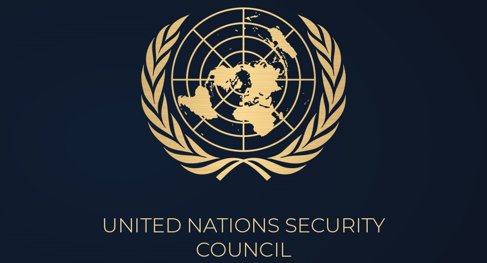
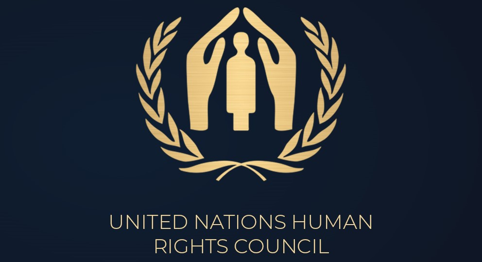
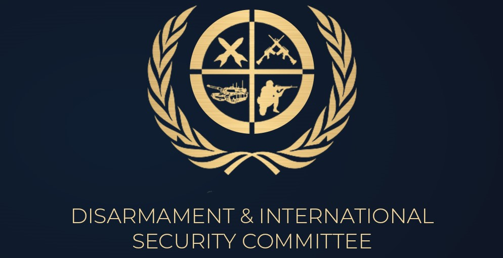
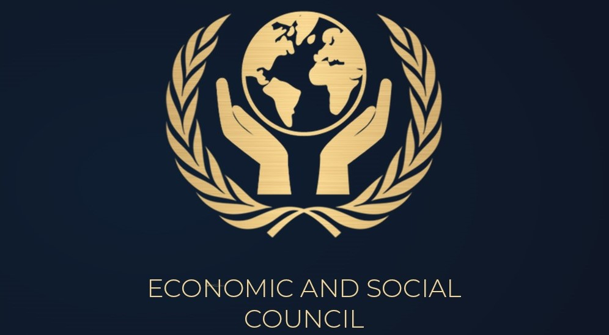

Be the Change you wish to see in the World!
Global Model United Nations(GMUN)
Communique: IITKGP
Starting Delegates Applications...
Committees for Global MUN

UNSC
It is one of the most powerful organ of United Nations.It is charged with maintaining peace and security between nations.

UNHRC
It withholds the responsibility to ensure and strengthen the promotion and protection of human rights on global scale.

DISEC
It was created as the first of the main committees in the General Assembly. The purpose to establish it is general princiles of co-operation in the maintainance of international Peace

ECOSOC
It is dedicated to establish frameworks that promote a higher standard of living. Also finding solutions to various international, economic, social amd environmental issues.